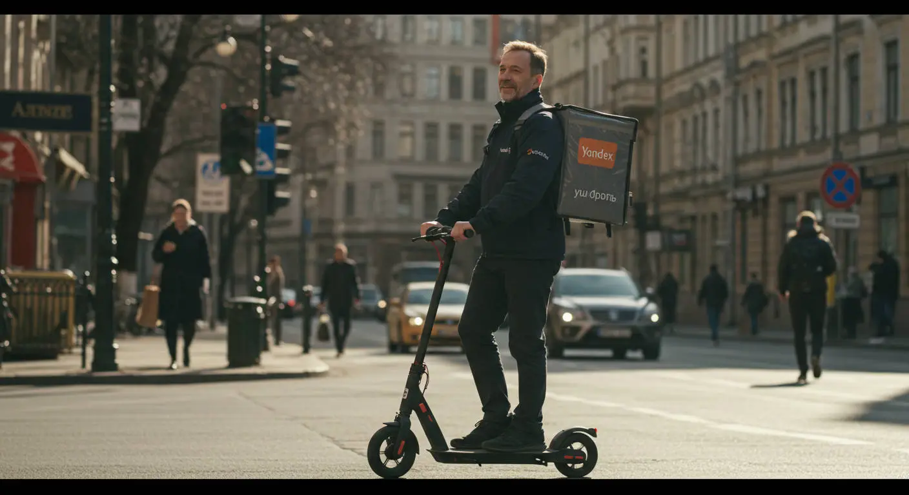

Работа курьером Яндекс Еды в Абакане 2025-2026: доход и условия
- Работа курьером Яндекс Еды в Абакане: для кого эта вакансия и что вы получите
- Сколько вы будете зарабатывать курьером в Абакане: калькулятор дохода и разбор выплат
- Реальный заработок курьера в Абакане: смены и месячный доход
- График работы и форматы занятости
- Требования к кандидату и документы
- Самозанятость, налоги и юридическая чистота
- Пошаговое оформление и первый выход на линию в Абакане
- Пешком, на вело или на авто: что выгоднее в Абакане
- Районы, маршруты и «топовые» зоны заказов в Абакане
- Безопасность, страховка, штрафы и оплата простоя
- Плюсы и возможные минусы работы курьером в Абакане
- Реальные истории и отзывы курьеров из Абакана
- Ответы на главные вопросы о работе курьером Яндекс Еды в Абакане
- Короткие ответы на главные вопросы
- Подведём итоги: твой следующий шаг
Все города
Думаешь, работа курьером Яндекс Еда в Абакане — это легкие деньги? Сел на велик или в свою «ласточку» — и катайся по городу, получай заказы. Но боишься, что в реальности весь доход съедят бензин и штрафы, а в час пик будешь больше стоять в пробках на Щетинкина, чем доставлять? Я здесь, чтобы рассказать, как оно на самом деле, без рекламной шелухи и обещаний золотых гор.
Поверь, работа курьером в Абакане — это не просто «взял заказ — отвез». Это математика. Не поймешь, как работает приоритет, какие районы «кормят» в обед, а какие — вечером в пятницу, и будешь кататься вхолостую, сжигая топливо и нервы. Большинство новичков сливаются в первый же месяц именно потому, что не учитывают абаканскую специфику: от стоимости амортизации своей машины до того, что заказ в новостройки на Арбане — это одно, а доставка в частный сектор за рекой — совсем другая история по времени и деньгам. Чтобы заранее оценить все нюансы, изучить требования и посмотреть калькулятор дохода, рекомендуем заглянуть на официальную страницу, где собрана вся информация про работу курьером Яндекс Еда в Абакане.
В этом гиде мы с тобой честно разберём всё по косточкам. Посчитаем, сколько реально можно заработать в Абакане пешком, на велосипеде и на авто после вычета бензина и налогов. Выясним, в каких районах — от Центра до Юго-Западного — больше всего заказов и выше коэффициенты. Я расскажу, как абаканская зима и короткое лето влияют на доход, за что на самом деле прилетают штрафы и как их избежать, и стоит ли вообще смотреть в сторону других доставок в нашем городе.
Меня зовут Алексей. Я сам не один год откатал с желтым коробом по этим улицам, а сейчас у меня свой небольшой таксопарк-партнёр, так что я вижу всю эту «кухню» с двух сторон. Моя задача — дать тебе честную картину, чтобы ты принял взвешенное решение. Никакой воды и рекламных лозунгов. Давай по порядку, сейчас всё разложу по полочкам.
Прежде чем нырять в детали, пробежимся по ключевым моментам. Этот короткий гид поможет быстро сориентироваться в статье.
Что ты точно узнаешь из этого разбора про Абакан
В этой статье ты ТОЧНО узнаешь:
- Сколько реально можно заработать в Абакане за смену и за месяц, если работать пешком, на велосипеде или на авто?
- В каких районах Абакана — от центра до спальников — больше всего заказов и выше коэффициенты?
- Что выгоднее выбрать для Абакана: пешую доставку, велосипед или свой автомобиль, и как это влияет на доход?
- Как быстро оформить самозанятость, сколько платить налогов и почему это проще, чем кажется?
- За что на самом деле штрафуют и как работает страховка, если что-то случится на смене?
- Как правильно выбирать слоты и зоны в приложении, чтобы не кататься впустую и ловить пиковый спрос?
А если тебе некогда читать всю статью — переходи сразу к заключению, где ты найдёшь короткие ответы на все эти вопросы и указания, в каких разделах искать подробности.
А чтобы сразу увидеть общую картину по доходам и условиям, вот наглядная инфографика.
Работа курьером в Абакане: ключевые цифры
Работа курьером Яндекс Еды в Абакане: для кого эта вакансия и что вы получите
Кому подойдёт эта работа в Абакане
Давай начистоту: эта работа не для всех, но для многих в Абакане она может стать отличным решением. В первую очередь, это идеальный вариант для студентов. Свободный график легко совмещать с парами в ХГУ или любом другом вузе, выходя на линию на 3–4 часа вечером или в выходные. А главное — ежедневные выплаты: не нужно ждать зарплаты до конца месяца.
Также это отличная подработка для тех, кому нужен дополнительный доход. Если у тебя есть основная работа со сменным графиком или просто свободные вечера, доставка поможет превратить это время в деньги. Сюда приходят и люди совсем без опыта: не нужно резюме на пять страниц и рекомендации. Понадобятся только смартфон, желание двигаться и аккуратность. И конечно, это хороший вариант для водителей-курьеров, которые хотят, чтобы их автомобиль приносил доход, а не просто стоял под окном.
Главные преимущества для жителей районов Юго-Западный, Красный Абакан, Нижняя Согра
Ключевое преимущество этой работы в Абакане — возможность доставлять заказы прямо в своём районе. Город у нас не гигантский, но мотаться с одного конца на другой — то ещё удовольствие. Сервис через приложение Яндекс Про позволяет выбирать слоты в конкретных зонах, так что ты можешь работать там, где всё знаешь.
Например, если ты живёшь в Юго-Западном, можешь брать заказы из местных кафе и развозить их по соседним домам, не тратя время на дорогу до центра. Это же относится и к жителям Красного Абакана или Нижней Согры — там тоже есть спрос, и можно работать локально. Такой подход экономит и время, и силы, а для курьера на автомобиле — ещё и бензин. Ты просто выходишь из подъезда и через пять минут уже на линии.
Что по деньгам и условиям
Если говорить о деньгах, то в Абакане цифры вполне реальные. При частичной занятости, работая по 3–4 часа в день, можно получать 1500–2500 рублей за смену. Если выходить на полный день, часов на 8–10, то доход может доходить и до 4000–5000 рублей. В месяц при полной занятости активные курьеры зарабатывают и 70 000–90 000 рублей. Конечно, итоговая зарплата зависит от тебя, сезона и количества заказов.
Ключевые условия и требования простые: свободный график, который ты сам составляешь в приложении «Яндекс Про». Ежедневные выплаты — отработал смену, и деньги уже на карте. Начать можно без опыта: пройдёшь короткое онлайн-обучение, получишь фирменный термокороб и можешь выходить на линию. Для работы нужно будет оформить самозанятость, но это делается онлайн за 10 минут. Никаких сложных собеседований и испытательных сроков.
Сколько вы будете зарабатывать курьером в Абакане: калькулятор дохода и разбор выплат
Из чего складывается доход курьера
Твой заработок курьером — это не просто фиксированная ставка. Доход складывается из нескольких частей: есть базовая оплата за каждый выполненный заказ, к которой добавляется доплата за расстояние. В часы пик (обед, ужин, выходные) или в плохую погоду включаются повышающие коэффициенты. Карта в приложении Яндекс Про окрашивается в яркие цвета, и стоимость доставки может вырасти в 1,5–2 раза.
Кроме этого, есть персональные бонусы за выполнение определённого числа заказов. Клиенты часто оставляют чаевые — они полностью твои. И ещё две важные фишки: оплата простоя, если ты приехал в ресторан, а заказ ещё не готов, и возможная компенсация проезда для пеших курьеров на дальних маршрутах. Всё это суммируется в твой итоговый доход за смену.
Как пользоваться калькулятором дохода
На странице есть специальный калькулятор — полезный инструмент для примерного расчёта. Пользоваться им просто. Сначала выбираешь свой город — Абакан. Затем указываешь, как планируешь доставлять: как пеший курьер, на велосипеде или на своем авто.
После этого двигаешь ползунки: выставляешь, сколько часов в день и сколько дней в неделю ты готов работать. Например, 4 часа в день, 5 дней в неделю. На основе этих данных и средней статистики по городу калькулятор покажет тебе примерный заработок за день и за месяц. Это, конечно, не стопроцентная гарантия, но хороший ориентир, чтобы понять, на какой доход можно рассчитывать.
Калькулятор дохода курьера в Абакане
8 часов
5 дней
64 000 ₽
Это примерный расчёт на основе средней ставки в Абакане. Реальный доход зависит от спроса, бонусов, чаевых и вашего рейтинга.
Чтобы узнать самые актуальные условия и требования, а также заполнить анкету, переходи на официальную страницу — там всегда свежая информация по твоему городу: работа курьером Яндекс Еда в твоём городе.
Примеры расчёта для пешего, вело- и авто‑курьера в Абакане
Давай на конкретных примерах, чтобы было понятнее.
- Пеший курьер-студент. Работает в центре Абакана, в районе улиц Щетинкина и Ленина, где много кафе. Выходит на 4 часа после учёбы в пиковое время (с 18:00 до 22:00). За счёт высокого спроса и коротких расстояний он может сделать 8–10 заказов. Его средний доход за такую смену составит 1600–2200 рублей.
- Велокурьер. Доставляет заказы между спальными районами, например, из центра в Юго-Западный. Работает по 6 часов в день, 5 дней в неделю. За счёт скорости он покрывает большие расстояния и берёт больше заказов, чем пеший курьер. Его дневной заработок может быть в районе 2500–3500 рублей.
- Курьер на автомобиле. Выходит на полную смену 8–10 часов, особенно в плохую погоду. Он берёт самые дальние и дорогие заказы по всему городу, включая доставку в отдалённые районы вроде Нижней Согры или дачные массивы. За день такой водитель-курьер может заработать 4000–5500 рублей, даже за вычетом расходов на бензин.
Вот тебе реальный кейс. Один из наших водителей-курьеров на своей машине в сильный снегопад в Абакане решил не сидеть дома, а вышел на линию. Коэффициенты были максимальные, многие другие не работали. Он брал заказы, от которых отказывались — в частный сектор, на окраины. За 10 часов работы он сделал почти 7000 рублей «грязными». После вычета бензина осталось больше 6000. Это показывает, как смекалка и правильный момент могут серьёзно поднять твой доход.
В итоге, твой заработок напрямую зависит от выбранного способа доставки, количества отработанных часов и умения ловить моменты высокого спроса. Советую поиграть с калькулятором, подставить разные графики и посмотреть, какой формат работы курьером в Яндекс Еде будет для тебя самым выгодным в Абакане.
Реальный заработок курьера в Абакане: смены и месячный доход
Диапазон дохода для подработки и полной занятости
Давай сразу к главному — к деньгам. Твой реальный заработок курьером в Яндекс Еде или Доставке в Абакане напрямую зависит от того, сколько времени ты готов уделять работе и на чём передвигаешься. Цифры я даю чистыми, уже после комиссии сервиса, но до вычета налога (если ты самозанятый) и расходов на транспорт.
Если для тебя это подработка на 2–4 часа в день после основной работы или учёбы, то расклад примерно такой. Пеший курьер или велокурьер в среднем делает 800–1500 рублей за короткую смену. В месяц это выливается в 15 000–25 000 рублей при регулярных выходах. Курьер на автомобиле за то же время заработает больше, около 1200–2500 рублей, так как может брать более дальние и дорогие заказы. Его месячный доход при частичной занятости — 25 000–40 000 рублей.
При полной занятости, работая по 8–10 часов в день, цифры совсем другие. Пеший или велокурьер может рассчитывать на 2000–3500 рублей в день, что в месяц даёт зарплату в 45 000–70 000 рублей.
Курьер на своем авто при полном рабочем дне в Абакане спокойно делает 3000–5000 рублей и больше. В месяц это уже 65 000–100 000 рублей. Конечно, из этой суммы нужно вычесть бензин, но даже с учётом расходов работа на автомобиле — самый прибыльный вариант.
Как район, время суток и погода влияют на доход
Запомни простое правило: твой доход — это не только часы на линии, но и умение оказываться в нужном месте в нужное время. Самые прибыльные часы — обеденный пик (с 12:00 до 14:00) и вечерний (с 18:00 до 22:00), а также все выходные и праздники. В это время заказов из ресторанов и магазинов очень много, и сервис включает повышающие коэффициенты и бонусы — карта в приложении «Яндекс Про» окрашивается в фиолетовый цвет. Заказ, который обычно стоит 150 рублей, в такой зоне может стоить 250–300.
Погода в Абакане — твой лучший друг. Как только пошёл дождь, снег или ударил мороз, люди не хотят выходить из дома, и количество заказов взлетает. Коэффициенты растут, а клиенты становятся щедрее на чаевые. Зимой, когда у нас настоящая Сибирь, курьеры на авто особенно востребованы. Летом в жару тоже много заказов на напитки и мороженое, которые важно довезти холодными в термокоробе.
Район тоже решает. В центре Абакана, в районе улиц Щетинкина и Ленина, где много кафе и офисов, всегда есть работа в обед. Вечером спрос смещается в спальные районы — Юго-Западный, Полярный, МПС. Умный курьер не стоит на месте, а перемещается вслед за спросом, отслеживая «горящие» зоны в приложении Яндекс Про.
Советы по увеличению заработка от опытных курьеров
Чтобы работа курьером приносила максимум, нужно подходить к делу с головой. Первое — планируй свои выходы. Не стоит выходить в 9 утра в понедельник и ждать у моря погоды. Лучше поспать и выйти на линию к обеду, а основной упор сделать на вечерние часы и выходные. Бери плановые слоты в приложении — это может гарантировать минимальный доход, даже если заказов будет мало.
Второе — будь гибким. Если у тебя есть и велосипед, и машина, используй их по ситуации. В хорошую погоду для заказов в центре и соседних кварталах нет ничего лучше велосипеда — пробок нет, бензин не тратишь. Но как только погода испортилась или появился дорогой заказ на другой конец Абакана, например, в район Нижней Согры, — пересаживайся на авто.
И третье — работай над своим рейтингом. Вежливость с клиентами, опрятный вид и быстрая доставка влияют на твой рейтинг в системе. Высокий рейтинг даёт приоритет в распределении заказов. Это значит, что самые выгодные заявки сначала предложат тебе, а не новичку без опыта и с низкими оценками. Плюс, довольные клиенты чаще оставляют чаевые, а это приятный бонус к основному доходу.
Вот тебе живой пример. Мой знакомый, водитель-курьер в Яндекс Доставке, прошлой зимой за неделю сделал около 25 000 рублей. Его стратегия была простой: он брал только вечерние слоты с 17:00 до 23:00, когда коэффициенты максимальные. В сильные морозы он специально выезжал в отдалённые районы, откуда мало кто хотел везти заказы, и получал за них двойную плату. Да, пришлось потратиться на бензин, но чистая прибыль всё равно вышла отличной.
В общем, твой заработок в Яндекс Доставке в Абакане — это не лотерея, а результат твоих действий. Анализируй спрос, используй правильный транспорт и работай в пиковые часы. Главный совет — не сиди на месте, а постоянно ищи, где сейчас больше всего заказов и выше оплата.

График работы и форматы занятости
Подработка после учёбы или основной работы
Свободный график — это, пожалуй, главный козырь работы курьером в Яндексе. Ты сам себе начальник и решаешь, когда выходить на линию. Это идеальный вариант для тех, кто ищет подработку и не хочет работать по стандартному графику с девяти до шести. Совмещать с учёбой или основной работой — проще простого.
Например, есть парень-студент из ХГУ. Он учится очно, пары у него в основном до обеда. После учёбы он пару часов отдыхает, а с 18:00 до 22:00 выходит на смену в Яндекс Еде на велосипеде. Катается по центру и ближайшим районам. В будни работает 3–4 дня, плюс берёт одну полную смену в субботу. В итоге у него набегает 20–25 тысяч в месяц — отличная прибавка к стипендии.
Другой пример — мужчина, который днём работает системным администратором. У него есть своя машина. Он выходит на линию по вечерам в пятницу и на весь день в воскресенье. Для него это и способ отвлечься от сидячей работы, и хороший дополнительный доход. За эти полтора дня он привозит домой 10–12 тысяч рублей, что в месяц даёт около 40 000. Говорит, что так быстрее копит на отпуск с семьёй.
Полная занятость: как выглядит типичный день курьера
Если ты решил, что работа курьером — твоё основное занятие, день будет строиться вокруг пиков спроса. Типичный день курьера на полной занятости в Абакане выглядит примерно так. Выход на линию около 11:00–11:30, как раз к началу обеденного бума. Первые 2–3 часа — это активная работа в центре, доставка заказов из кафе в офисы.
Примерно с 15:00 до 17:00 наступает затишье. В это время можно спокойно пообедать, заехать по своим делам или просто отдохнуть. Некоторые используют этот период для выполнения заказов из магазинов через Яндекс Доставку — они менее срочные, но стабильно есть. А с 17:30–18:00 начинается вторая волна — вечерний пик, который длится до 22:00, а в пятницу и субботу и дольше. Здесь уже идут заказы из ресторанов в спальные районы по всему городу.
Такой рваный ритм позволяет не выматываться за 8–10 часов. Ты не сидишь на одном месте, постоянно в движении, но при этом есть окна для отдыха. Главное — не пытаться работать без перерыва, иначе быстро перегоришь. Опытные курьеры всегда планируют свой день так, чтобы чередовать активную работу и паузы.
Как планировать слоты и выходы через приложение «Яндекс Про»
Вся работа курьера организуется через приложение «Яндекс Про». Это твой главный инструмент. В нём ты видишь карту города с зонами повышенного спроса, принимаешь заказы и отслеживаешь свой доход, который можно выводить хоть каждый день. Одна из ключевых функций — это планирование слотов. Слот — это забронированный отрезок времени, в который ты обязуешься работать в определённом районе.
Планировать слоты выгодно. Во-первых, сервис даёт приоритет курьерам на слотах. Во-вторых, за плановые слоты часто бывают дополнительные бонусы и гарантии минимального заработка. Ты можешь открыть расписание на неделю вперёд и выбрать удобные для себя часы и районы. Самые выгодные слоты (вечерние и выходные) разбирают быстро, так что лучше планировать заранее.
Очень важно не опаздывать на начало слота и не уходить с него раньше времени. Система это отслеживает, и регулярные нарушения могут негативно сказаться на твоём рейтинге активности. А низкий рейтинг — это меньше заказов и, соответственно, меньше денег. Поэтому относись к слотам как к обычной работе: если записался — будь добр выйти вовремя. Это дисциплинирует и в итоге напрямую влияет на стабильность твоего дохода.
Вот кейс от одного из водителей-курьеров. Он студент-заочник, работает почти каждый день. Раньше он выходил на линию хаотично, когда придётся, и заработок скакал: то густо, то пусто. После того как он начал планировать слоты, всё изменилось. Он стал заранее бронировать себе смены с 11:00 до 15:00 и с 18:00 до 22:00 в зонах с высоким спросом. Уже через две недели его средний дневной доход вырос почти на 30%, потому что он перестал тратить время на ожидание и всегда был в центре событий.
В итоге, свободный график — это не анархия. Чтобы он работал на тебя, а не против тебя, используй инструменты планирования в «Яндекс Про». Бронируй слоты, выходи в пиковые часы, и тогда твой доход от работы курьером будет стабильным и предсказуемым.
Требования к кандидату и документы
Основные требования: возраст, гражданство и другие условия
Давай сразу разберёмся, какие условия работы курьером и кого ждут в сервисе. Многие думают, что тут заоблачные требования, но на деле всё гораздо проще, и опыт не нужен. Главное — тебе должно быть полных 18 лет. Это строгое правило, связанное с материальной ответственностью и официальным оформлением, так что никаких исключений.
Второе — гражданство. Для работы курьером без проблем берут граждан России, а также стран ЕАЭС — это Беларусь, Казахстан, Армения и Киргизия.
Что касается физической формы, то рекорды ставить не нужно. Если ты пеший курьер или курьер на велосипеде, будь готов много двигаться — работа активная, так что базовая выносливость пригодится. Для курьера на автомобиле главное — уверенно водить и хорошо ориентироваться в Абакане.
Какие документы нужны для работы курьером
Чтобы стать курьером, лучше собрать все бумаги заранее. Список короткий, и у большинства они уже есть под рукой. Это стандартный набор для официального оформления в качестве партнёра-самозанятого.
Вот какие документы нужно подготовить:
- Паспорт гражданина РФ (или страны ЕАЭС). Основной документ для подтверждения личности и заключения договора.
- ИНН (Идентификационный номер налогоплательщика). Нужен для регистрации самозанятости и уплаты налогов. Если не помнишь свой номер, его можно за пару минут бесплатно узнать на сайте ФНС.
- Именная банковская карта. Выплаты будут приходить на твою личную карту любого российского банка (МИР, Visa, MasterCard). Важно, чтобы она была оформлена именно на тебя.
- Медицинская книжка. Может понадобиться для доставки заказов из продуктовых магазинов или некоторых ресторанов. Требования меняются, но с медкнижкой будет доступно больше заказов.
Можно ли работать с 16 лет и какие есть альтернативы
Один из самых частых вопросов: со скольки лет можно работать в Яндекс Еде? Отвечу честно: устроиться курьером можно только с 18 лет. Никаких компромиссов здесь нет. Это связано с полной материальной ответственностью за заказы и деньги, а также с юридическим статусом самозанятого, который доступен только совершеннолетним.
Если тебе 16 или 17 лет и ты ищешь подработку, не стоит отчаиваться. Просто доставка от Яндекса — пока не твой вариант. Можешь рассмотреть другие форматы: раздача листовок, работа промоутером, помощь в местных кофейнях или магазинах на должностях, не связанных с разъездами и материальной ответственностью. Так ты получишь первый опыт и заработаешь свои деньги, а как исполнится 18 — добро пожаловать в сервис.
Самозанятость, налоги и юридическая чистота
Почему курьеры Яндекс Еды работают как самозанятые
Многих пугает слово «самозанятость», кажется, что это что-то сложное с налогами и бумажками. На самом деле всё наоборот. Этот режим (НПД) был придуман, чтобы курьеры, таксисты и фрилансеры могли работать на себя официально и без головной боли. Яндекс Еда сотрудничает с курьерами именно как с самозанятыми партнёрами, а не нанимает в штат.
Что это даёт тебе? Во-первых, это официальный доход. Ты можешь спокойно взять кредит или получить визу, потому что у тебя есть подтверждённые заработки.
Во-вторых, никакой сложной бухгалтерии. Не нужно нанимать бухгалтера или сдавать декларации, как ИП. Все данные о выплатах автоматически передаются в налоговую через приложение Яндекс Про. По сути, ты — независимый исполнитель, который получает заказы от крупной платформы. Это даёт свободный график и легальность, что гораздо безопаснее, чем работать за «серый» кэш.
Как за 10 минут оформить самозанятость через «Мой налог»
Зарегистрироваться самозанятым проще, чем создать аккаунт в соцсети. Весь процесс оформления занимает 10–15 минут и делается прямо с телефона, никуда ходить не нужно. Я своим парням в таксопарке всегда объясняю эту простую схему, и ещё никто не запутался.
Вот пошаговый план:
- Скачай приложение. Зайди в Google Play или App Store и найди официальное приложение ФНС — «Мой налог».
- Начни регистрацию. Открой приложение и выбери способ «По паспорту РФ».
- Отсканируй паспорт. Наведи камеру телефона на главный разворот. Приложение само распознает все данные.
- Сделай селфи. Приложение попросит моргнуть на камеру, чтобы подтвердить, что ты — живой человек, а не фото.
- Подтверди данные. Проверь информацию, выбери свой регион (Республика Хакасия) и вид деятельности (например, «доставка» или «транспортные услуги»).
Вот и всё. Через несколько минут придёт уведомление, что ты официально зарегистрирован как плательщик налога на профессиональный доход (НПД). Никаких госпошлин и походов в налоговую.
Сколько и как платить налоги
Теперь о самом главном — о деньгах. Ставка налога для самозанятых — одна из самых низких в стране. Ты платишь 6% с доходов, полученных от юридических лиц. Поскольку Яндекс — это юрлицо, именно эта ставка будет применяться к твоему заработку от заказов. Если получишь чаевые от клиента напрямую на карту (как от физлица), налог составит 4%, но основной доход облагается по ставке 6%.
Процесс уплаты налога полностью автоматизирован. Яндекс Про сам передаёт в налоговую информацию о твоих выплатах. В приложении «Мой налог» ты будешь видеть, как формируется сумма налога за месяц.
До 12-го числа следующего месяца приходит уведомление с итоговой суммой, а заплатить её нужно до 28-го числа. Можно привязать карту, и налог будет списываться автоматически, либо платить вручную одной кнопкой. Это в разы проще, чем работать неофициально. Плюс, всем новым самозанятым государство даёт бонус — налоговый вычет в 10 000 рублей, который первое время снижает твою ставку.
Пошаговое оформление и первый выход на линию в Абакане
Многие думают, что устроиться на работу, особенно без опыта, — это долго и муторно: собеседования, бумажки, ожидание. Здесь всё иначе. Весь процесс в Яндекс Доставке отлажен так, чтобы ты мог выйти на линию и получить первый доход максимально быстро, часто — в тот же день. Никаких начальников и сложных согласований, всё делается через телефон и официальных партнёров сервиса. Главное — твоё желание.
Шаг 1–2: анкета и онлайн‑обучение
Всё начинается с простой анкеты на сайте, для которой не нужен опыт работы. Укажешь ФИО, номер телефона, город Абакан и гражданство. Это занимает буквально 3–5 минут. После этого твои данные проходят быструю проверку, и тебе на телефон приходит ссылка на короткое онлайн-обучение.
Обучение — это не нудные лекции, а несколько коротких видеороликов или слайдов прямо в приложении. Там по делу объясняют основы: как пользоваться приложением «Яндекс Про», как правильно общаться с клиентами и сотрудниками ресторанов, что делать в нестандартных ситуациях. В конце будет небольшой тест из нескольких вопросов, чтобы убедиться, что ты всё понял. Справится любой, кто умеет пользоваться смартфоном. Это не экзамен, а просто проверка на внимательность.
Шаг 3: получение сумки и доступа к заказам в Абакане
После успешного прохождения теста система даст тебе следующий шаг — получение фирменной экипировки. Главное в ней — это термосумка (или термокороб, если будешь работать на авто). Без неё доставлять еду нельзя, так как важно сохранить температуру заказа. В Абакане сумку можно получить в офисе одного из официальных партнёров сервиса.
Не нужно самому искать адреса. Как только ты пройдёшь обучение, в приложении «Яндекс Про» появится карта с точками выдачи в Абакане и их график работы. Приезжаешь, показываешь свой профиль в приложении, забираешь сумку — и всё, твой аккаунт полностью активирован. С этого момента ты видишь заказы и можешь выходить на линию.
Шаг 4: первый слот и первый доход
Теперь самое интересное. Открываешь «Яндекс Про», смотришь на карту Абакана и выбираешь временной интервал для работы — это называется «слот». Слоты бывают разной длительности, от пары часов до целого дня. Для первого раза советую выбрать короткий слот на 3–4 часа и в том районе, который ты хорошо знаешь. Например, если живёшь в Юго-Западном, начни с него — будет спокойнее и проще ориентироваться.
Как только твой слот начинается, ты нажимаешь кнопку «На линии» и ждёшь первый заказ. Приложение само найдёт ближайший к тебе заказ, построит маршрут до ресторана, а потом до клиента. Выполняешь доставку, и деньги за неё сразу же появляются на твоём балансе в Яндекс Про. Эти средства можно выводить на карту хоть каждый день. Так, уже в первый день ты можешь заработать свои первые 500–1000 рублей и убедиться, что всё работает честно и просто.
Расскажу про парня, который у нас в парке начинал. Зовут Сергей, студент. Заполнил анкету в понедельник утром, пока сидел на паре. К обеду прошёл обучение и тест. После учёбы заехал в офис партнёра на улице Пушкина, забрал сумку. Вечером того же дня, в 18:00, он уже вышел на свой первый слот в центре. За три часа спокойно выполнил 6 заказов из кафе на Щетинкина и заработал около 900 рублей. Говорит, самое сильное впечатление — когда увидел первые деньги на балансе уже через 15 минут после первого заказа.
В общем, условия регистрации и старта максимально упрощены. От анкеты до первого заработка может пройти всего несколько часов. Главный совет: как только прошёл обучение, не тяни с получением сумки — это единственный шаг, который отделяет тебя от реальных заказов и денег.
Пешком, на вело или на авто: что выгоднее в Абакане
Выбор транспорта — ключевой момент, от которого напрямую зависит твой заработок и комфорт. В Абакане у каждого способа доставки есть свои плюсы и минусы, свои «хлебные» районы и сценарии использования. Нельзя сказать, что что-то одно однозначно лучше. Всё зависит от твоих целей: нужна ли тебе лёгкая подработка на пару часов или ты хочешь выжимать максимум из смены.
Пеший курьер: для центра и плотной застройки в Абакане
Если у тебя нет машины или велосипеда, или ты просто хочешь совместить работу с прогулкой — работа пешим курьером идеальна для старта. Она особенно выгодна в центре Абакана, где много кафе, ресторанов и офисов. В квадрате улиц Ленина – Пушкина – Щетинкина – Вяткина заказы появляются постоянно, а расстояния между точками А и Б часто не превышают 500–700 метров. Пока водитель ищет парковку, ты уже забираешь заказ и несёшь его клиенту.
Также пешая доставка отлично работает в густонаселённых жилых кварталах, например, в районе парка «Орлёнок» или в новых микрорайонах, где много многоэтажек. Тебе не нужно тратиться на бензин или проезд, а значит, почти весь доход — твой. Это хороший вариант для студентов или тех, кому нужна подработка на 2–4 часа в день в своём районе.
Велокурьер: быстрые доставки между спальными районами
Велосипед — это золотая середина. Ты уже не зависишь от расписания автобусов, но ещё не стоишь в пробках и не ищешь парковку. Для Абакана, который в целом довольно плоский, это отличный вариант. На велосипеде удобно работать на доставках между соседними спальными районами, например, возить заказы из Юго-Западного в район МПС или из центра в Нижнюю Согру. Дистанции в 2–4 километра ты преодолеешь гораздо быстрее пешего курьера, а значит, успеешь выполнить больше заказов за то же время.
Многие ребята называют это «оплачиваемым фитнесом». Ты и деньги зарабатываешь, и поддерживаешь себя в форме. Главное — иметь исправный велосипед и быть готовым к капризам хакасской погоды, особенно к ветру. Но в хороший день доход велокурьера стабильно выше, чем у пешего.
Водитель‑курьер: заказы по всему городу и пригороду Усть-Абакана и Черногорска
Работа водителем-курьером на своем авто открывает доступ к самым денежным заказам. Это доставка на большие расстояния, например, из одного конца Абакана в другой, или в ближайшие пригороды — Усть-Абакан, Черногорск. Также на машине удобно выполнять крупные заказы из гипермаркетов вроде «Ленты» или «Командора», которые пешком или на велосипеде просто не унести.
Особенно выгодно работать на авто в плохую погоду — дождь, снегопад, сильный мороз. В это время количество заказов резко растёт, включаются повышенные коэффициенты, а пеших и велокурьеров на линии становится меньше. Именно в такие моменты водители-курьеры получают максимальный доход. Да, есть расходы на бензин и амортизацию, но высокий заработок в пиковые часы их с лихвой перекрывает.
Сравнение форматов доставки в Абакане
| Параметр | Пеший курьер | Велокурьер | Водитель-курьер |
|---|---|---|---|
| Зоны работы | Центр, плотные жилые кварталы | Соседние районы, дистанции 2-5 км | Весь город, пригороды (Усть-Абакан, Черногорск) |
| Средний доход | Базовый | Средний | Высокий |
| Расходы | Минимальные (удобная обувь) | Обслуживание велосипеда | Бензин, амортизация авто |
| Главные плюсы | Нет затрат, фитнес, работа в центре без пробок | Скорость, маневренность, больше заказов в час | Дальние и дорогие заказы, комфорт, высокий доход в непогоду |
| Главные минусы | Низкая скорость, зависимость от погоды, ограничение по весу | Нужен велосипед, физическая нагрузка, сложно зимой | Расходы на топливо, пробки в час пик, поиск парковки |
У меня в парке-партнере есть водитель, Дмитрий. Он после основной работы, часов в шесть вечера, переключает в «Яндекс Про» режим на «Курьер» и работает 3-4 часа. Специально ловит пиковый спрос, когда люди заказывают ужины. Он не берёт короткие заказы по центру, а целенаправленно ждёт дальние доставки в Красный Абакан или крупные продуктовые корзины. В прошлую пятницу, когда был сильный дождь, он за 4 часа сделал почти 3000 рублей. Говорит, пешком или на велике в такую погоду он бы и 500 рублей не заработал.
В итоге, выбор транспорта для работы курьером зависит от твоих ресурсов и амбиций. Для старта и подработки в своём районе отлично подойдёт формат пешего курьера. Если хочешь зарабатывать больше и готов крутить педали — выбирай вакансию велокурьера. А если есть машина и цель — максимальный доход, то работа на своем авто будет оптимальным решением, особенно в часы пик и плохую погоду.
Районы, маршруты и «топовые» зоны заказов в Абакане
Чтобы в Абакане не просто кататься, а хорошо зарабатывать, нужно понимать, где и когда «клюёт». Город у нас не миллионник, но свои «рыбные места» есть, и знание карты спроса в приложении «Яндекс Про» — твой главный инструмент. Просто выходить на линию в случайном месте — это как стрелять из пушки по воробьям: топливо или силы потратишь, а стабильного дохода не увидишь.
Главное правило — сочетай. Нельзя всё время сидеть в центре в ожидании заказа с высоким коэффициентом, но и мотаться по спальным районам без разбора тоже невыгодно. Умный водитель-курьер или велокурьер планирует свой день так, чтобы быть в нужное время в нужном месте: в обед — у бизнес-центров, вечером — в густонаселённых жилых кварталах, а в выходные — рядом с парками и ТРЦ. Со временем ты начнёшь чувствовать ритм города и будешь заранее знать, куда сместиться, чтобы поймать волну заказов.
Где больше всего заказов: ТРЦ, бизнес-центры и туристические места
Самые горячие точки, где на карте в «Яндекс Про» почти всегда фиолетовые зоны (то есть действуют повышающие коэффициенты), — это крупные торговые центры. В первую очередь смотри на ТРЦ «Калина» на проспекте Дружбы Народов и ТРК «Европа» на улице Крылова. Там сосредоточены фуд-корты и рестораны, которые генерируют постоянный поток заказов для Яндекс Еды, особенно в обеденное время, по вечерам и в выходные.
Второй источник стабильного спроса — деловой центр города. Это кварталы в районе улиц Щетинкина, Ленина, Чертыгашева. Здесь много офисов, и с 12 до 15 часов сотрудники активно заказывают бизнес-ланчи. Вечером спрос смещается в сторону ресторанов в этом же районе. Летом и в тёплые выходные добавляются зоны отдыха, например, парк «Сады Мечты» и Преображенский парк. Люди гуляют и заказывают еду прямо туда. Если видишь в этих зонах высокий коэффициент — смело бери слот, без работы не останешься.
Работа в своём районе: примеры для популярных жилых кварталов
Многие думают, что все деньги только в центре, но это не так. Работать в своём районе тоже можно и нужно, особенно если ты пеший курьер или передвигаешься на велосипеде. Главный плюс — ты экономишь время и топливо на дорогу до «жирной» зоны, а заказы выполняешь быстрее, потому что знаешь каждый двор. Такая подработка отлично подходит для старта.
Например, в Юго-Западном районе или в районе МПС полно и многоэтажек, и точек общепита — от пиццерий до суши-баров. Вечерами и в выходные здесь стабильный поток заказов еды на дом. Да, средний чек может быть ниже, чем в центре, и коэффициенты не такие высокие, но ты берёшь количеством. Пока кто-то стоит в пробке на Щетинкина, ты уже успеваешь развезти 2–3 заказа по соседним домам. То же самое касается и новых кварталов в районе Арбан — там много молодых семей, которые являются активными пользователями доставки.
Как выбирать зоны и слоты в «Яндекс Про», чтобы не мотаться впустую
Приложение «Яндекс Про» — твой штурман. Главный экран — это карта спроса. Зоны, подсвеченные фиолетовым, означают повышенный спрос и, соответственно, более высокий доход. Чем насыщеннее цвет, тем выше доплата к каждому заказу. Перед началом смены всегда смотри на эту карту и выбирай слот в той зоне, где уже есть «фиолет» или он вот-вот появится.
Не гоняйся за одним заказом через весь город в «мёртвую» зону. Если получил заказ из центра в отдалённый район, посмотри на карту: есть ли там поблизости рестораны или магазины? Если да, есть шанс получить обратный заказ. Если нет, то, возможно, выгоднее будет вернуться пустым, но в зону высокого спроса. Планируй маршруты так, чтобы заканчивать один заказ недалеко от потенциального места получения следующего. Это основа эффективной работы, которая напрямую влияет на твой итоговый заработок.
Из практики: один наш водитель-курьер поначалу брал все заказы подряд. Уехал из центра Абакана в Ташебу, а там — тишина. В итоге полчаса простоя и холостой пробег обратно. Теперь он действует умнее: если видит дальний заказ в пригород, смотрит на коэффициент. Если доплата хорошая и покрывает обратную дорогу — берёт. А если нет, лучше подождёт 5–10 минут и возьмёт более выгодный заказ в черте города.
Главный секрет стабильного заработка — анализировать карту спроса в приложении и знать ключевые точки в Абакане. Не ленись изучать город, и тогда работа будет приносить не только деньги, но и удовольствие. Мой совет: совмещай работу в центре в пиковые часы с доставками в своём районе в остальное время — это самая надёжная стратегия.
Безопасность, страховка, штрафы и оплата простоя
Работа курьера, особенно на авто или велосипеде, связана с определёнными рисками. Ты постоянно в движении, на дороге, имеешь дело с разными людьми. Поэтому вопросы безопасности и финансовой защиты — это не то, на что можно махнуть рукой. В Яндексе к этому подходят серьёзно, и у тебя есть инструменты, которые защищают и твоё здоровье, и твой доход.
Важно понимать, что порядок и дисциплина — это часть условий работы, которая помогает всем. Клиент должен получить свой заказ вовремя и в целости, а ты — свою оплату и гарантии. Если следовать простым правилам, никаких проблем не возникнет. Давай разберём, что тебя страхует, за что могут наказать и как система защищает тебя от простоев.
Бесплатная страховка на сменах и что она покрывает
Как только ты выходишь на активный слот, у тебя автоматически включается бесплатная страховка жизни и здоровья. Это не пустые слова, а реальная финансовая защита и важное условие работы в сервисе. Если во время выполнения заказа с тобой что-то случится — попадёшь в ДТП, упадёшь с велосипеда на скользкой дороге, подвернёшь ногу — страховка покроет расходы на лечение. Сумма покрытия достигает 2 миллионов рублей.
Это работает просто: произошёл страховой случай — сразу сообщай в службу поддержки через «Яндекс Про». Они фиксируют обращение и дают инструкцию, что делать дальше. Главное — не молчать и не пытаться решить всё самому. Эта страховка — твоя подушка безопасности, которая гарантирует, что ты не останешься один на один с проблемой и счетами из больницы.
Правила безопасности на дороге и при доставке
Это базовые правила, которые спасут тебе нервы, здоровье и деньги. Для пешего курьера главное — быть внимательным: переходи дорогу по «зебре», а в тёмное время суток убедись, что тебя видно — благо, на жёлтой форме и термокоробе есть светоотражающие элементы.
Для велокурьера к этому добавляется шлем (настоятельно рекомендую), исправные тормоза и фонари. Ты — полноценный участник движения, веди себя соответственно. Для водителя-курьера правила стандартные: не гоняй, не отвлекайся на телефон, паркуйся так, чтобы не мешать другим. В плохую погоду — дождь, а особенно гололёд, который в Абакане зимой не редкость, — сбавляй скорость вдвое. Лучше опоздать на 5 минут и предупредить поддержку, чем устроить аварию. И, конечно, аккуратность с заказом: термосумку держи ровно, чтобы не превратить пиццу в кашу.
Какие бывают штрафы и как их избежать
Давай честно: штрафы есть. Но это не самоцель сервиса, а крайняя мера за серьёзные нарушения стандартов. Никто не будет тебя штрафовать за опоздание на две минуты из-за длинного светофора. Система штрафов и понижения рейтинга включается, когда курьер систематически нарушает правила: например, грубит клиентам или сотрудникам ресторана, портит заказы, регулярно опаздывает без уважительной причины.
Как этого избежать? Элементарно. Будь вежлив, даже если клиент не в настроении. Обращайся с заказом бережно. Если понимаешь, что опаздываешь (ресторан долго готовит, пробка), напиши в чат поддержки. Они зафиксируют причину и предупредят клиента. Не отменяй уже принятые заказы без веской причины и не пропускай забронированные слоты — это сильно бьёт по рейтингу. По сути, просто делай свою работу добросовестно, и никаких штрафов не будет.
Что такое оплата простоя и как она защищает ваш доход
Это одна из ключевых фишек, которая выгодно отличает условия работы в Яндекс Еде. Оплата простоя — это твоя гарантия минимального заработка, даже если в твоей зоне временно нет заказов. Работает это на плановых слотах. Ты выбираешь время и район, выходишь на линию, но заказов по какой-то причине мало. Чтобы ты не тратил своё время бесплатно, сервис начисляет тебе минимальную почасовую ставку.
Например, ты забронировал слот с 12:00 до 16:00. За первые полчаса не было ни одного заказа. Система видит, что ты онлайн, находишься в нужной геолокации и готов работать. За это время ожидания тебе будет начислена компенсация. Это защищает твой доход и убирает главный страх новичков: «А что, если я выйду, а заказов не будет?». Будут или не будут — ты всё равно получишь минимальную оплату за своё время.
Из практики: был случай, когда в одном из районов Абакана из-за аварии отключили свет, и несколько кафе перестали принимать заказы. Курьеры, которые были на слоте в этой зоне, фактически остались без работы на час. Благодаря оплате простоя, они не потеряли деньги, а получили гарантированную минимальную ставку за этот час ожидания.
В итоге, твоя безопасность и доход защищены с нескольких сторон. Есть страховка на случай ЧП, чёткие правила, которые помогают избегать проблем, и финансовые гарантии вроде оплаты простоя. Главный совет: работай спокойно, соблюдай ПДД и стандарты сервиса, и тогда работа курьером будет стабильным и безопасным источником дохода.
Плюсы и возможные минусы работы курьером в Абакане
Давай по-честному, без розовых очков. Любая работа — это не только доход, но и свои заморочки. Доставка — не исключение. Важно взвесить все плюсы и минусы заранее, чтобы потом не было сюрпризов. Я в этом бизнесе давно и насмотрелся на всякое, так что расскажу как есть.
Сильные стороны работы курьером в Абакане
Начнём с того, ради чего сюда вообще приходят. Плюсы тут весомые, особенно если сравнивать с работой по найму, где сидишь от звонка до звонка.
Во-первых, это гибкий график. Ты сам решаешь, когда выходить на линию. Это идеальный вариант для подработки: хочешь — работай по 2–3 часа после основной занятости или учёбы, хочешь — выходи на полную смену на 8–10 часов. Никто не стоит над душой с криками «где отчёт?». Ты просто планируешь слоты в приложении «Яндекс Про» и работаешь.
Во-вторых, ежедневные выплаты. Это, пожалуй, главный козырь. Твой доход за смену приходит на карту практически сразу. Не нужно ждать аванса и зарплаты по две недели. Сделал несколько заказов — вот тебе живые деньги на твои нужды. Для многих, особенно студентов, это решающий фактор.
Третий момент — работа рядом с домом. В Абакане можно выбрать конкретный район, где тебе удобнее всего работать. Живёшь в Юго-Западном или в районе Полярный — пожалуйста, бери заказы там. Не нужно тратить час на дорогу до офиса и обратно. Вышел из подъезда — и ты уже на работе.
И, наконец, поддержка и официальное оформление. Ты не брошен один на один с проблемами. На смене действует бесплатная страховка жизни и здоровья. Если что-то случится — будет компенсация. Плюс, одно из главных условий работы — статус самозанятого. Это официальный доход, который легко подтвердить, но без сложной бухгалтерии. Всё оформляется онлайн, а налог для самозанятых списывается автоматически через приложение.
С какими сложностями чаще всего сталкиваются курьеры
Теперь о другой стороне медали. Было бы нечестно говорить, что всё идеально. Минусы есть, но к ним можно приспособиться.
Главная сложность — физическая нагрузка. Особенно для пеших курьеров и велокурьеров. Целый день на ногах или в седле, да ещё и с термокоробом за плечами — это не в офисе сидеть. Поначалу мышцы будут гудеть, особенно с непривычки. Тут совет простой: хорошая, удобная обувь и одежда, не пытаться ставить рекорды в первую неделю, втягиваться постепенно.
Вторая проблема — погода. Абакан — это Сибирь. Зимой у нас и морозы, и снегопады, и гололёд. Летом бывает жара. Работать в ливень или в -25 °C — то ещё удовольствие. С другой стороны, в плохую погоду всегда включаются повышающие коэффициенты, заказов больше, а чаевых — щедрее. Главное — правильно одеваться: зимой термобельё и непродуваемая куртка, летом — лёгкая одежда и запас воды.
Третий момент — возможные простои. Бывают часы, особенно днём в будни, когда заказов меньше. Сидишь и ждёшь. Это может нервировать, когда хочешь заработать. Но здесь сервисы Яндекса подстраховали: для курьеров на плановых слотах действует гарантия минимального дохода в час, даже если заказов не было. Это не даст уйти в минус, но, конечно, в пиковые часы заработок всегда выше.
И последнее — общение с разными клиентами. 95% людей адекватные и вежливые. Но иногда попадаются и недовольные, и те, кто ищет повод для конфликта. Важно сохранять спокойствие, быть вежливым и не вступать в перепалку. Если ситуация сложная — всегда можно связаться с поддержкой, они помогут разрулить.
Кому такая работа подходит, а кому лучше поискать другой формат
Давай прикинем, твоё это или нет. Такая подработка курьером идеально подходит, если ты:
- Студент. Совмещать с учёбой проще простого. После пар вышел на 3–4 часа — и на карманные расходы заработал.
- Активный человек. Любишь движение, не можешь сидеть на месте. Для тебя это будет и работа, и фитнес в одном флаконе.
- Нуждаешься в быстрых деньгах. Если доход нужен здесь и сейчас, а не через месяц, ежедневные выплаты — твой вариант.
- Интроверт. Не хочешь работать в большом коллективе, слушать сплетни и участвовать в корпоративах. Тут ты сам по себе: взял заказ, отвёз, получил деньги.
А вот кому стоит поискать что-то другое. Работа курьером вряд ли тебе подойдёт, если ты:
- Не любишь физические нагрузки и предпочитаешь комфорт. Целый день на улице в любую погоду покажется адом.
- Ищешь стабильный оклад. Здесь заработок зависит только от тебя: сколько часов отработал, сколько заказов выполнил. В один день может быть густо, в другой — пусто. Если тебе нужна предсказуемость дохода до копейки, лучше смотреть в сторону офисной работы.
- Мечтаешь о карьерном росте в классическом понимании (менеджер, начальник отдела). Здесь твой рост — это рост твоего дохода и опыта, но не должности.
- Плохо переносишь стресс от общения с незнакомыми людьми или от дорожной обстановки.
Реальные истории и отзывы курьеров из Абакана
Теория — это хорошо, но лучше всего о работе говорят реальные люди. Я пообщался с нашими ребятами из Абакана, вот несколько типичных историй.
История студента ХГУ им. Н.Ф. Катанова, который совмещает учёбу и доставку
«Меня зовут Кирилл, учусь на истфаке в ХГУ. Живу в общаге на Вяткина, так что работаю велокурьером в основном в центре. График у меня простой: после пар, где-то с 16:00 до 20:00–21:00, выхожу на линию. Плюс почти всю субботу катаюсь. В центре Абакана заказов всегда много, особенно с кафешек на Щетинкина и Ленина. Крутить педали недалеко, рестораны и клиенты рядом.
Мой заработок за день выходит разный, от 1000 до 2000 рублей, если смена часа 4–5. В неделю получается набежать 7–9 тысяч. Для студента — отличные деньги. Хватает и на жизнь, и на развлечения, и родителям помогать не приходится. Главный плюс — сам себе хозяин. Есть зачёт — взял выходной. Нужны деньги на свидание — вышел на дополнительную смену. Привыкнуть пришлось только к тому, что нужно постоянно следить за зарядом телефона и пауэрбанком».
Опыт автокурьера, который выходит в пиковые часы
«Я работаю системным администратором, зовут меня Игорь. Основная работа с 9 до 18, график стандартный. А на своей машине подрабатываю как курьер на автомобиле в сервисах Яндекса — вожу заказы и из Яндекс Еды, и из Доставки. Выхожу чисто в "жирные" часы: обеденный перерыв с 12:00 до 14:00 и вечером с 18:30 до 22:00. В это время всегда повышенный спрос, коэффициенты горят, заказы сыплются один за другим.
На машине удобно брать дальние доставки, например, из центра в 4-й микрорайон или МПС. Пеший курьер туда просто не дойдёт быстро. Также часто вожу большие заказы из супермаркетов. За вечерний слот в 3–4 часа спокойно делаю 1500–2500 рублей. Это "грязными", то есть до вычета расходов на бензин и налога самозанятого. Но даже так остаётся хорошая прибавка к основной зарплате. Меня такой формат полностью устраивает: машина не простаивает, а приносит дополнительный доход».
Мнение пешего или вело‑курьера о работе в центре и спальниках
«Меня зовут Аня, я работаю велокурьером уже полгода. Попробовала разные районы Абакана и могу сказать, что везде своя специфика.
В центре работать круто, потому что заказы идут нон-стоп. Рестораны на каждом углу, клиенты в соседних домах. Пробеги короткие, поэтому можно сделать много доставок за час. Но есть и минусы: много людей, приходится лавировать в толпе, с парковкой велосипеда у некоторых бизнес-центров бывают проблемы.
В спальных районах, например, в Юго-Западном, всё наоборот. Спокойно, машин и людей меньше. Клиенты — в основном семьи, часто оставляют хорошие чаевые. Но и расстояния между точками больше, а плотность заказов ниже. Иногда приходится подождать следующий заказ минут 10–15. Лично мне больше нравится комбинировать: начинаю в центре в пиковые часы, а когда спрос спадает, перемещаюсь в ближайший спальник. Так получается и заработать хорошо, и не вымотаться в городской суете».
Ответы на главные вопросы о работе курьером Яндекс Еды в Абакане
Собрал здесь ответы на те вопросы, которые мне задают чаще всего. Без воды, только по делу, чтобы у тебя не осталось сомнений и непонятных моментов.
Ответы на ключевые вопросы кандидатов
Нужно ли оформлять самозанятость и как платить налоги?
Да, это обязательное условие. Работа курьером в Яндекс Еде — это официальная деятельность, а не просто «калым». Статус самозанятого (НПД — налог на профессиональный доход) — самый простой и законный способ сотрудничества. Оформление занимает 10–15 минут онлайн через приложение «Мой налог» или прямо в Яндекс Про. Никакой бухгалтерии и отчётов: налог (6% с дохода от заказов Яндекса) рассчитывается и списывается автоматически. Это твоя гарантия, что доход легальный, и к тебе не будет вопросов от налоговой.
Какой телефон и интернет нужны для работы курьером?
Для работы понадобится смартфон на базе Android, желательно версии 7.0 и выше. Важно: на iPhone приложение «Яндекс Про» для курьеров не работает. Телефон должен уверенно держать зарядку, потому что приложение с включённым GPS её расходует быстро. Поэтому настоятельно советую сразу купить пауэрбанк. Интернет нужен стабильный, мобильный, чтобы без проблем получать заказы и пользоваться навигатором. Слабый сигнал — это потерянные заказы и, соответственно, упущенный доход.
Что будет, если в смену мало заказов — как работает оплата простоя?
Это одно из ключевых преимуществ в условиях работы, которое отличает Яндекс от многих других сервисов. Если ты вышел на запланированный слот (заранее выбрал время и район), а заказов объективно мало, сервис начислит минимальную гарантированную оплату за час. Это своего рода страховка твоего времени. Ты не будешь сидеть бесплатно в ожидании заказа — это важная часть условий. Размер гарантии зависит от города и спроса, но сам факт её наличия — большой плюс, особенно для новичков.
Есть ли в Яндекс Еде штрафы и за что их могут применить?
Давай честно: система штрафов есть, но это скорее крайняя мера, а не основной инструмент контроля. В основном всё завязано на рейтинге. Штраф можно получить за серьёзные нарушения: грубость клиенту или персоналу ресторана, порчу или кражу заказа, частые опоздания на плановые слоты или отказ от принятого заказа без веской причины. Если ты работаешь добросовестно, вежливо общаешься и доставляешь заказы в целости, то со штрафами не столкнёшься. За мелкие ошибки вроде «чуть дольше ехал из-за пробки» никто наказывать не будет.
Сколько реально можно заработать курьером в Абакане и чем эта вакансия лучше других сервисов?
В Абакане при полной занятости курьер на автомобиле может зарабатывать 3500–4000 рублей в день, особенно если работать в пиковые часы и выходные. Пеший курьер или велокурьер зарабатывает в среднем 1500–2500 рублей за смену. Главное отличие от местных сервисов доставки — это стабильный поток заказов. Яндекс — огромная система, к которой подключено большинство ресторанов и магазинов. Кроме того, Яндекс предлагает технологии: удобное приложение Яндекс Про, которое строит маршруты, и такие гарантии, как страховка на сменах и оплата простоя, чего у местных игроков обычно нет.
Можно ли работать без опыта и что будет на обучении?
Конечно, можно. Одно из главных требований — желание работать, а опыт в доставке не обязателен. Большинство новичков приходят именно без него. Весь процесс построен так, чтобы ты быстро во всём разобрался. Обучение проходит онлайн — это короткий и понятный курс с видео и текстами. Тебе расскажут, как пользоваться приложением Яндекс Про, правильно общаться с клиентами и ресторанами, действовать в нестандартных ситуациях. В конце будет небольшой тест для проверки знаний. Ничего сложного, это не экзамен в ГИБДД.
Берут ли с 16–17 лет и какие есть ограничения по возрасту?
Здесь всё строго: стать курьером в Яндекс Еду можно только с 18 лет. Это требование законодательства. Среди документов для оформления понадобятся паспорт гражданина РФ или одной из стран ЕАЭС, ИНН и статус самозанятого, который также доступен только с 18 лет для такого формата работы.
Короткие ответы на главные вопросы
Собрали здесь ключевые моменты из статьи в формате быстрой шпаргалки. Если что-то забыл — заглядывай сюда.
Коротко по делу: главные ответы для курьера в Абакане
Короткие ответы на ключевые вопросы
Сколько реально можно заработать в Абакане за смену и за месяц, если работать пешком, на велосипеде или на авто?
При подработке 2–4 часа в день доход составит 1500–2500 ₽ за смену. При полной занятости водитель-курьер может зарабатывать до 4000–5000 ₽ в день, что в месяц выходит в 70 000–90 000 ₽ до вычета расходов.
→ Подробнее читай в разделе «Реальный заработок курьера в Абакане: смены и месячный доход».В каких районах Абакана — от центра до спальников — больше всего заказов и выше коэффициенты?
Самые «жирные» зоны — это центр города в обед (улицы Щетинкина, Ленина) и крупные ТРЦ («Калина», «Европа»). Вечером и в выходные высокий спрос смещается в спальные районы, такие как Юго-Западный и МПС.
→ Подробнее читай в разделе «Районы, маршруты и «топовые» зоны заказов в Абакане».Что выгоднее выбрать для Абакана: пешую доставку, велосипед или свой автомобиль, и как это влияет на доход?
Пеший курьер идеален для центра, велосипед — для быстрых доставок между спальными районами. Самый высокий доход у водителя-курьера, который может брать дальние заказы по всему городу и в пригород, особенно в плохую погоду.
→ Подробнее читай в разделе «Пешком, на вело или на авто: что выгоднее в Абакане».Как быстро оформить самозанятость, сколько платить налогов и почему это проще, чем кажется?
Самозанятость оформляется за 10 минут онлайн через приложение «Мой налог», никуда ходить не нужно. Налог составляет 6% с дохода от заказов, он рассчитывается и уплачивается автоматически, что гораздо проще и безопаснее неофициальной работы.
→ Подробнее читай в разделе «Самозанятость, налоги и юридическая чистота».За что на самом деле штрафуют и как работает страховка, если что-то случится на смене?
Штрафы применяют за серьёзные нарушения: грубость, порчу заказа или регулярные пропуски слотов. На каждой смене действует бесплатная страховка жизни и здоровья, которая покрывает расходы на лечение в случае травмы.
→ Подробнее читай в разделе «Безопасность, страховка, штрафы и оплата простоя».Как правильно выбирать слоты и зоны в приложении, чтобы не кататься впустую и ловить пиковый спрос?
Следите за картой спроса в приложении «Яндекс Про» и выбирайте плановые слоты в «фиолетовых» зонах с повышенными коэффициентами. Это гарантирует больше заказов и защищает от простоя, обеспечивая минимальный доход в час.
→ Подробнее читай в разделе «График работы и форматы занятости».
Для полного понимания темы рекомендую прочитать всю статью — там ты найдёшь примеры, сравнения и дельные советы из практики.
Подведём итоги: твой следующий шаг
Краткие выводы по работе курьером в Абакане
Работа курьером в Яндекс Еде в Абакане — это реальный способ получать стабильный доход. При полной занятости заработок может быть на уровне средней зарплаты по городу, а в качестве подработки это отличный вариант для студентов или для совмещения с основной деятельностью. Главные плюсы — это свободный график, который ты выстраиваешь сам, и прозрачные условия. Ты заранее видишь стоимость заказа, получаешь ежедневные выплаты и защищён такими гарантиями, как страховка и оплата простоя. В сравнении с другими вакансиями в Абакане, Яндекс даёт стабильный поток заказов и технологичную платформу, что сильно упрощает работу.
Как сделать первый шаг уже сегодня
Начать проще, чем кажется. Весь процесс трудоустройства занимает от одного до нескольких дней и проходит почти полностью онлайн.
- Заполни анкету. Заполняется онлайн на официальном сайте, это займёт не больше 10 минут.
- Подготовь документы. Понадобится паспорт и ИНН. Рекомендую сразу скачать приложение «Мой налог», чтобы быстро оформить самозанятость.
- Пройди обучение. После проверки анкеты тебе откроется доступ к короткому онлайн-курсу и небольшому тесту.
- Получи сумку и выбери слот. Ты узнаешь, где в Абакане забрать фирменный термокороб (термосумку), и сможешь выбрать свой первый рабочий слот в приложении Яндекс Про. Начать зарабатывать можно уже на следующий день.